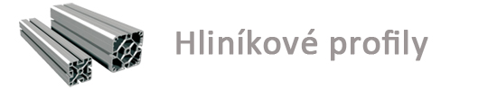
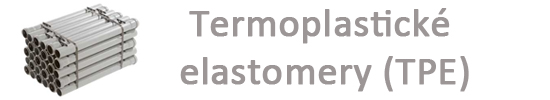
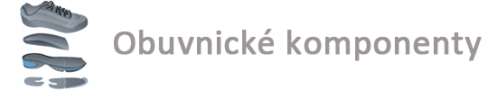

Přesné hliníkové profily a technické TPE elastomery
Dodáváme ucelený sortiment lisovaných a tažených profilů z konstrukčních slitin hliníku a termoplastické elastomery pro průmyslové aplikace.

Hliníkové profily Standard Proferal
Kompletní škála standardních průřezů a speciálních profilů pro strojírenství, automotive i stavebnictví.
Trubky a duté profily
Kruhové, čtvercové a obdélníkové trubky standardních i tenkostěnných rozměrů. Možnost provedení s oblými hranami pro designové a nábytkářské konstrukce.
Tyče a plné profily
Kruhové, čtyřhranné, šestihranné a ploché tyče ve stavech T4, T5, T6 i T66. Určeno pro přesné CNC obrábění na soustružnických automatech.
Geometrické L, T, U, J profily
Rovnoramenné i nerovnoramenné úhelníky, T-profily s různou délkou přírub a otevřené i uzavřené profily J pro vodicí a montážní lišty.
Mechanické vlastnosti hliníku a jeho slitin
Ověřené parametry dle evropských norem ČSN EN 573-3 a DIN 1725.
| Označení slitiny | Složení dle DIN | Stav materiálu | Pevnost Rm (MPa) | Mez kluzu Rp (MPa) | Tažnost A (%) | Tvrdost HB |
|---|---|---|---|---|---|---|
| EN AW 6060 | AlMgSi | T4 / T6 | 120 – 195 | 60 – 150 | 14 – 6 % | 50 – 75 |
| EN AW 6082 | AlSi1MgMn | T5 / T6 | 270 – 310 | 230 – 260 | 12 – 8 % | 90 – 95 |
| EN AW 6005A | AlSiMg(A) | T4 / T6 | 200 – 270 | 110 – 225 | 11 – 10 % | 60 – 90 |
| EN AW 2011 | AlCu6BiPb | T4 / T8 | 275 – 370 | 125 – 270 | 14 – 8 % | 95 – 100 |
| EN AW 7075 | AlZn5,5MgCu | T6 | 560 | 500 | 7 % | 145 |
Katalog výrobků a komponentů
Každá položka splňuje přísné normy rozměrové přesnosti a jakosti materiálu.
Lisované hliníkové profily Standard Proferal
Kompletní sortiment lisovaných profilů z konstrukčních slitin AlMgSi pro strojírenství a stavebnictví.
Tažné hliníkové profily a přesné tyče
Tažené kalibrované tyče kruhového, čtyřhranného a šestihranného průřezu s vysokou rozměrovou přesností.

Termoplastické elastomery (TPE) – směsi a profily
Spojovací článek mezi vulkanizovanou pryží a termoplasty se špičkovou elasticitou a recyklovatelností.

Komponenty pro obuvnický a kožedělný průmysl
Ucelený sortiment polotovarů, podešví a materiálů pro profesionální výrobu a opravy obuvi.
Termoplastické elastomery (TPE)
Termoplastické elastomery představují moderní spojovací článek mezi vulkanizovanou gumou a termoplastickými polymery. Poskytují pryžovou elasticitu a flexibilitu při zachování snadné zpracovatelnosti na běžných vstřikovacích a vytlačovacích strojích.
- Produktové řady: Elastofran, Gumifran, Adifran, Elifran a Marfran
- 100% recyklovatelnost: Možnost opětovného zpracování technologického odpadu
- Vysoká odolnost: Vynikající odolnost vůči UV záření, ozónu i stárnutí
Poptávka a obchodní oddělení
Spojte se přímo s naším technickým týmem pro cenovou nabídku a dodací termíny.